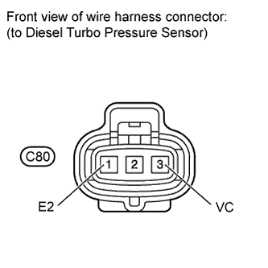

MANIFOLD ABSOLUTE PRESSURE SENSOR > ON-VEHICLE INSPECTION |
| 1. CHECK DIESEL TURBO PRESSURE SENSOR |
 |
Inspect the power source voltage.
Disconnect the sensor connector.
Measure the voltage according to the value(s) in the table below.
| Tester Connection | Switch Condition | Specified Condition |
| C80-3 (VC) - C80-1 (E2) | Engine switch on (IG) | 4.5 to 5.5 V |
Turn the engine switch off.
Disconnect the sensor connector.
Check the vacuum and pressure.
Connect the intelligent tester to the DLC3.
Turn the engine switch on (IG) and turn the intelligent tester on.
Enter the following menus: Powertrain / Engine / Data List / Map and Atmosphere Pressure.
Read the value.
| Condition | Map and Atmosphere Pressure Value |
| No pressure applied | Same as atmospheric pressure |
| Vacuum applied | Becomes vacuum |
| Pressure applied | Becomes pressurized |